Table of Contents
This page is created to include a2a page in help namespace for automated export of documentation.
Analog-to-asynchronous elements
Analog-to-asynchronous (A2A) elements is a family of asynchronous arbitration primitives designed to increase the resilience and efficiency of the new generation of circuits and systems. This includes primitives for synchronisation and decision-making with an emphasis on interfacing analogue and digital worlds, sampling of non-persistent signals, cross-domain communication, and efficient handling of sensor events.
Synchronisation primitives
This section covers the primitives for the synchronisation of hazard-free signal transitions in asynchronous circuits with potentially hazardous signals coming from the environment.
WAIT and WAIT0
The WAIT element controls an asynchronous handshake ctrl / san by a non-persistent input sig. According to the WAIT STG below, sig is unconstrained and is allowed to switch between 0 and 1 values with no regard to the output handshake – this is captured by the loop with signal transitions sig+ and sig-. Initially ctrl=san=0 and WAIT is in the dormant mode, i.e. its input sig is isolated from the output san. By raising ctrl input, the element can be switched into the waiting mode, where it stays until sig becomes high and stays high for sufficiently long for internal event e to fire. The output san+ is then produced and persistently held until WAIT is reset by ctrl-. Here and further on, the output san is the `sanitised' (persistent) version of the `dirty' (non-persistent) input sig.
Note that an input spike (sig+ followed by sig-) in the waiting mode can be too short for the WAIT element to register it, in which case the spike is ignored and WAIT remains in the waiting mode. The non-persistent behaviour and the associated metastability is fully contained within the element, guaranteeing a clean hazard-free output. This is achieved using the mutual-exclusion MUTEX element [1]. Note that the output of the inverter in the implementation of WAIT is non-persistent, but this non-persistency will never propagate to san.
| 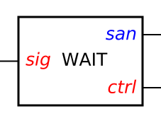 |
| WAIT block diagram wait-box.circuit.work (2 KiB) |
| 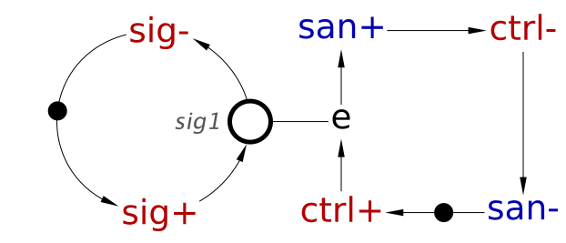 |
| WAIT behaviour (conceptual) wait.stg.work (3 KiB) |
| 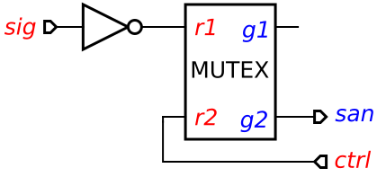 |
| WAIT implementation wait.circuit.work (3 KiB) |
The WAIT STG above is not a valid STG specification and should only be viewed as a generator of possible traces: Note that this STG is not output-determinate [2], which is an important correctness criterion. That is, there are two different states reachable via the observable trace ctrl+ sig+ sig-, with one of them enabling san+ and the other not, depending on whether unobservable transition e fired between sig+ and sig-. Hence, if viewed as a contract between the circuit and its environment, this STG is self-contradictory: It simultaneously requires the circuit to produce san+ after trace ctrl+ sig+ sig-, and forbids it to do so. However, in this particular case the contradiction is resolved by making output san+ optional after this trace, as shown in the state graph below. Note that the semantics of STGs is defined so that an enabled output must either fire or be disabled [2], i.e. outputs are always compulsory (i.e. there is no way to express an optional output in an STG). However, the issue is encapsulated inside WAIT – the environment of WAIT sees san+ as an input, and inputs are considered optional in STGs [2].
| 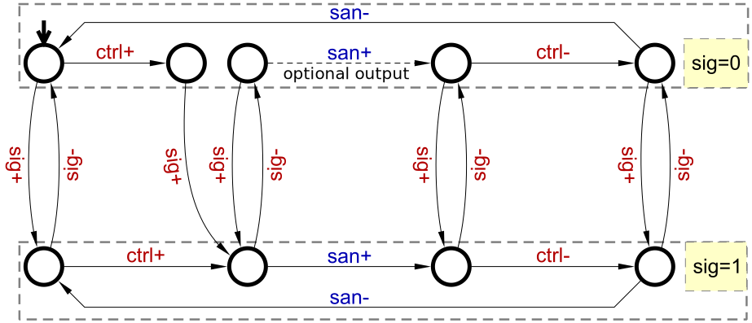 |
| WAIT state graph |
The symmetric version of the element that waits for the input to become low is called WAIT0; its top-level block diagram, the STG specification and the implementation are as follows:
| 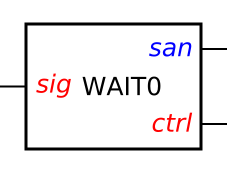 |
| WAIT0 block diagram wait0-box.circuit.work (2 KiB) |
| 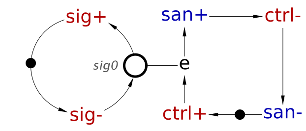 |
| WAIT0 behaviour (conceptual) wait0.stg.work (3 KiB) |
| 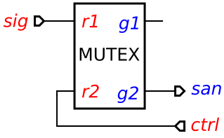 |
| WAIT0 implementation wait0.circuit.work (3 KiB) |
WAIT and WAIT0 are fundamental synchronisation primitives which are used for implementing other, more sophisticated elements presented below.
RWAIT and RWAIT0
RWAIT and RWAIT0 are modifications of the WAIT and WAIT0 elements, respectively, with a possibility to persistently cancel the waiting request. This is useful when the input is no longer expected to change or the change is no longer relevant for the asynchronous controller, and hence the output handshake needs to be released.
The additional input frc can be used to force the reset of the output handshake in the waiting mode. The STG specifies that the output transition san+ can be caused either by sig+ (the top branch) or by frc+ (the bottom branch). The implementation reflects the resulting OR-causality [3]: the inputs sig and frc are simply combined via a NOR gate, whose output is synchronised with the handshake ctrl / san using the WAIT0 element.
 |
| RWAIT block diagram rwait-box.circuit.work (2 KiB) |
 |
| RWAIT implementation rwait.circuit.work (3 KiB) |
| 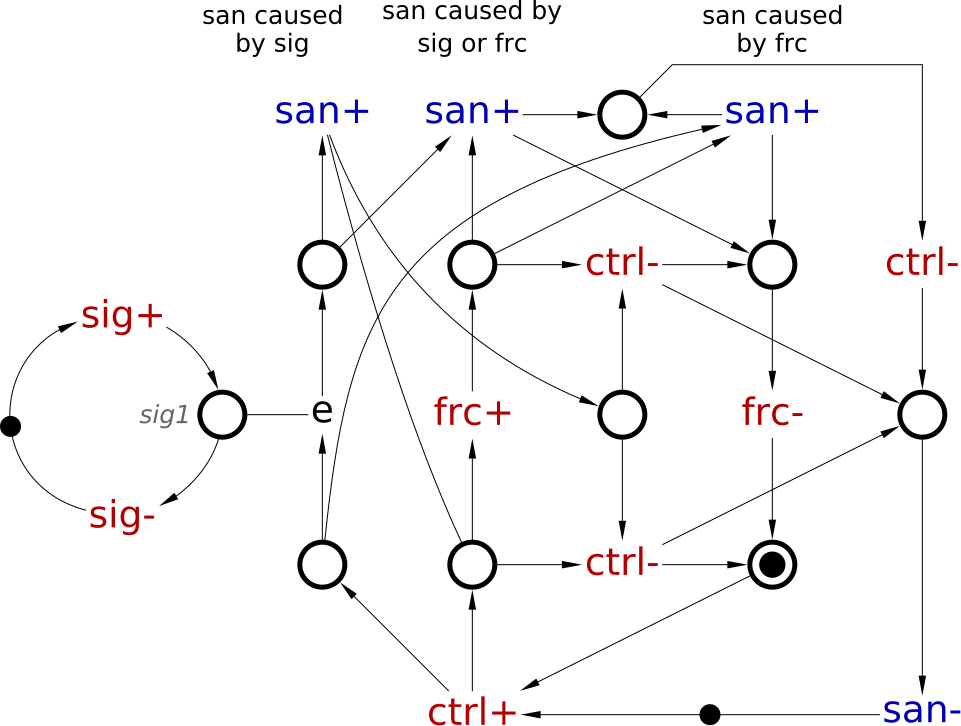 |
| RWAIT specification rwait.stg.work (5 KiB) |
 |
| RWAIT0 block diagram rwait0-box.circuit.work (2 KiB) |
 |
| RWAIT0 implementation rwait0.circuit.work (3 KiB) |
| 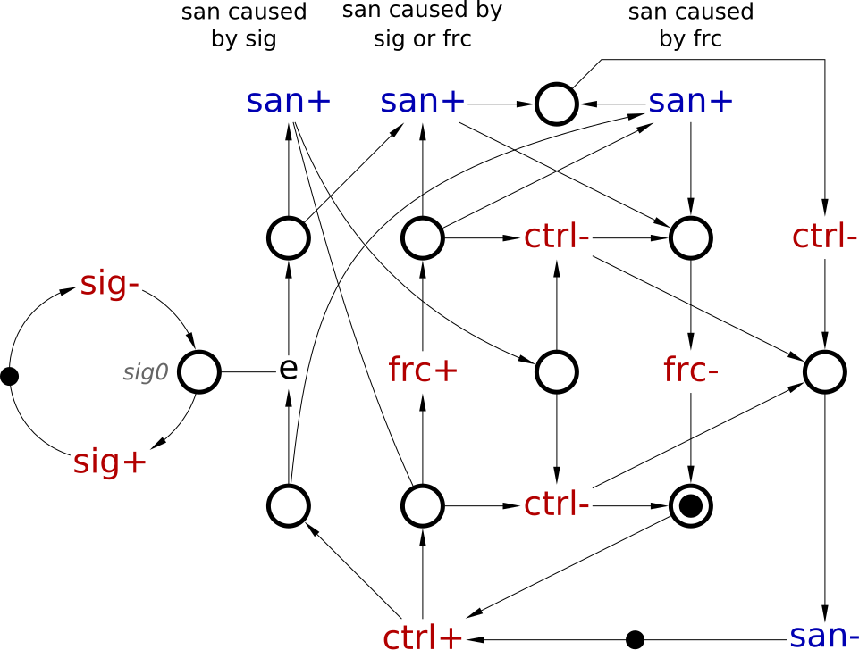 |
| RWAIT0 specification rwait0.stg.work (5 KiB) |
WAIT01 and WAIT10
WAIT01 and WAIT10 elements wait for a rising or falling edge of the input signal, respectively. Note that this is subtly different from waiting for a high or low input value, e.g. a signal can be initially low, and to generate a falling edge event it must first go high. The WAIT01 specification tracks the input changes via two dummy transitions that are enabled in sequence when sig=0 and sig=1 hold. This can be implemented by connecting WAIT0 and WAIT in sequence.
 |
| WAIT01 block diagram wait01-box.circuit.work (2 KiB) |
| 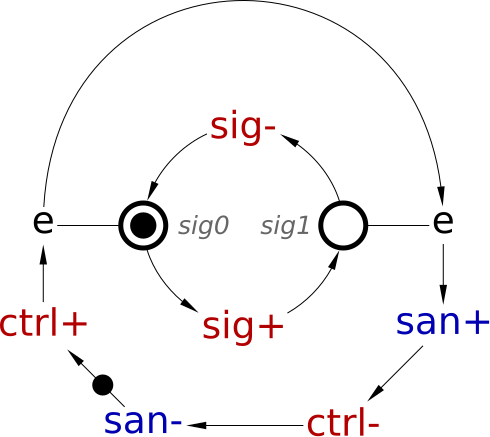 |
| WAIT01 specification wait01.stg.work (3 KiB) |
| 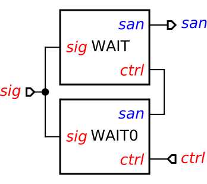 |
| WAIT01 implementation wait01.circuit.work (3 KiB) |
An element waiting for an arbitrary fixed pattern of alternating 0s and 1s, e.g. the symmetric WAIT10 element, can be implemented analogously.
| 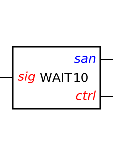 |
| WAIT10 block diagram wait10-box.circuit.work (2 KiB) |
 |
| WAIT10 specification wait10.stg.work (3 KiB) |
| 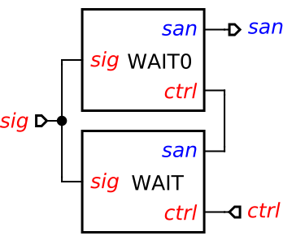 |
| WAIT10 implementation wait10.circuit.work (3 KiB) |
WAIT2
WAIT2 is another combination of WAIT and WAIT0: it uses a 2-phase output handshake, waiting for high and low input values, one after the other. One can think of WAIT2 as a 2-phase version of the WAIT element, or as a C-element whose input sig is hardened against hazards.
The STG contains two loops: the inner sig loop, which is unconstrained, and the outer handshake loop that synchronises the rising (ctrl+→san+) and the falling (ctrl-→san-) phases with conditions sig=1 and sig=0, respectively.
The implementation uses a toggle-like controller to steer the rising and falling edges of ctrl to the inputs of the WAIT and WAIT0 elements, in sequence, and take care of their appropriate reset.
 |
| WAIT2 block diagram wait2-box.circuit.work (2 KiB) |
 |
| WAIT2 specification wait2.stg.work (3 KiB) |
| 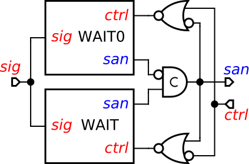 |
| WAIT2 implementation wait2.circuit.work (4 KiB) |
Decision-making primitives
This section presents a family of decision-making components that perform non-trivial event coordination and rely on the previously introduced synchronisation primitives.
WAITX
The WAITX element arbitrates between two non-persistent inputs {sig1, sig2}, producing a clean asynchronous dual-rail handshake: depending on which of the two signals arrives first, exactly one of the grant signals {g1, g2} is issued. The place me with two consuming arcs represents the arbitration decision that needs to be made: if the inputs arrive very close to each other, both of the two dummy transitions can become enabled but only one of them can occur, since me can have at most one token. In the reset phase both branches are merged in the place mrg.
| 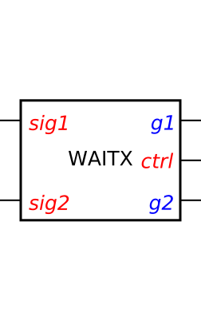 |
| WAITX block diagram waitx-box.circuit.work (2 KiB) |
| 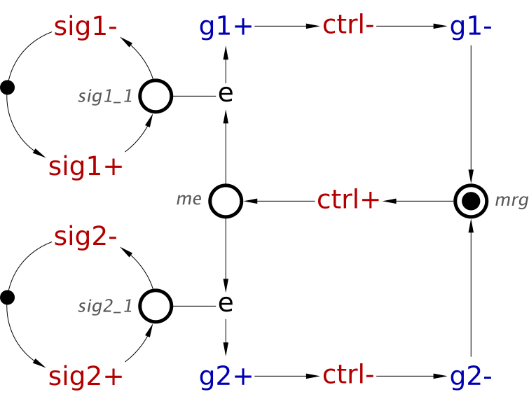 |
| WAITX specification waitx.stg.work (4 KiB) |
| 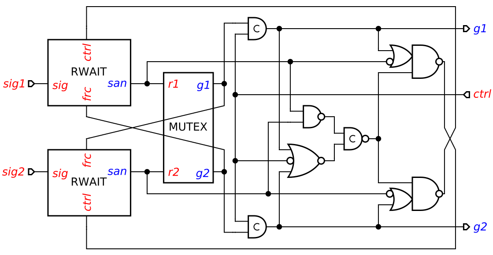 |
| WAITX implementation waitx.circuit.work (6 KiB) |
WAITX isolates the outputs both from the metastability associated with non-persistent inputs, as well as from the metastability associated with making the decision of which input signal arrives first. The implementation relies on RWAIT elements for synchronisation with non-persistent signals, and uses a MUTEX element to make the decision on their arrival order. See [4] for further implementation details and for a generalisation to more than 2 input signals.
WAITX2
WAITX2 behaves as WAITX in the rising phase and as WAIT0 in the falling phase, i.e. it does not release the output asynchronous handshake until the winning input signal goes low. It uses a 2-phase output handshake similarly to WAIT2, and the specification, is therefore a combination of the STGs for WAITX and WAIT2.
The implementation comprises WAITX and two WAIT0 elements controlled by toggle-like asynchronous logic, which activates the right WAIT0 element in the reset phase. The synthesis and technology mapping of the control was performed using conventional asynchronous design approaches automated in Workcraft.
 |
| WAITX2 block diagram waitx2-box.circuit.work (2 KiB) |
| 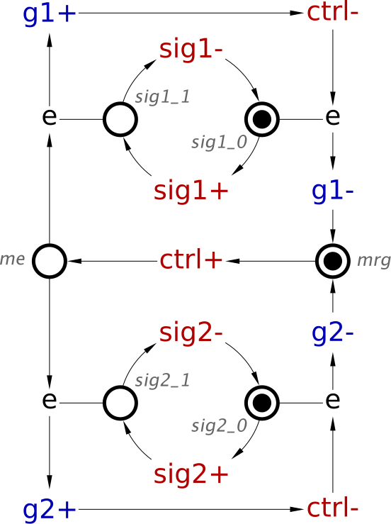 |
| WAITX2 specification waitx2.stg.work (4 KiB) |
| 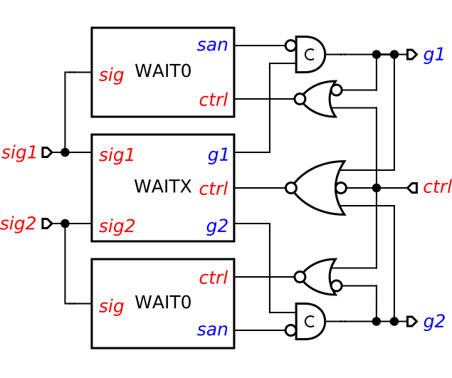 |
| WAITX2 implementation waitx2.circuit.work (5 KiB) |
SAMPLE
The purpose of the SAMPLE element is to check whether the voltage on the input sig is above the threshold. The specification is similar to that of WAITX but the two dummy transitions are controlled by conditions corresponding to the state of the same input sig. The implementation is based on WAITX that decides which of the two inputs, sig or its inverted version, becomes high first. Note that both inputs of WAITX may be high at the same time, e.g. during a transition of sig, in which case SAMPLE is allowed to make an arbitrary decision. However, if the input signal is stable, no metastability resolution is required and SAMPLE can therefore quickly produce the correct output.
| 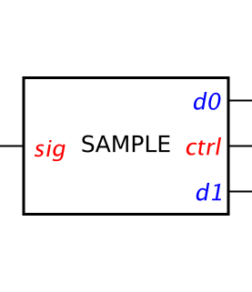 |
| SAMPLE block diagram sample-box.circuit.work (2 KiB) |
| 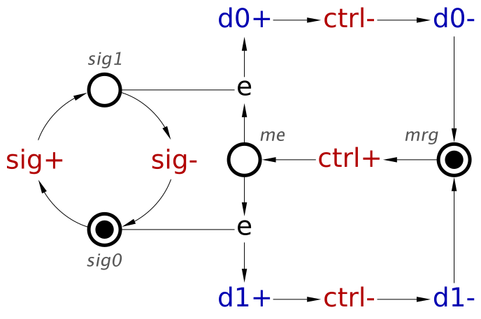 |
| SAMPLE specification sample.stg.work (4 KiB) |
| 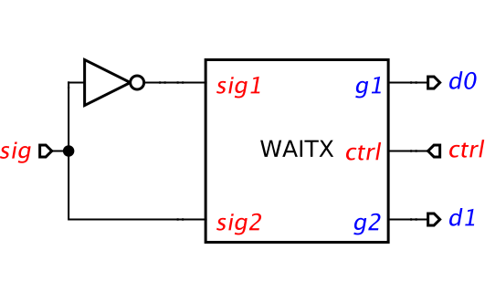 |
| SAMPLE specification sample.circuit.work (3 KiB) |
Opportunistic Merge
The opportunistic merge OM element merges two request-acknowledgement channels {r1 / a1, r2 / a2} into one r / a and can opportunistically bundle requests from different input channels if they arrive sufficiently close to each other.
The conceptual state graphs clarifies the difference between the standard merge element [5] and OM. The conceptual state graph of the merge element is shown on the left. Note that the bottom state of the graph is not persistent: outputs a1 and a2 disable each other, hence this is a decision-making element. The state graph for OM, shown on the right, has an additional opportunistic bundle transition labelled by {a1, a2} that sends acknowledgements to both input channels.
| 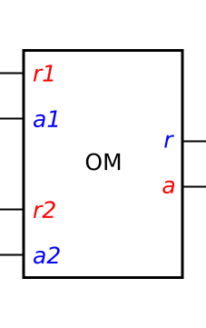 |
| OM block diagram om-box.circuit.work (2 KiB) |
| 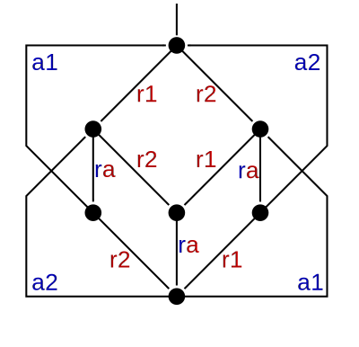 |
| MERGE specification (conceptual) |
| 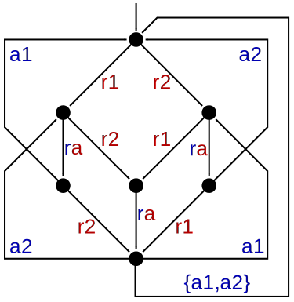 |
| OM specification (conceptual) |
| 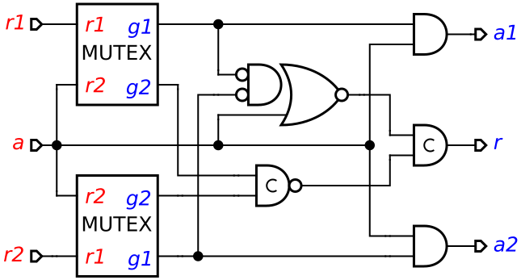 |
| OM implementation om.circuit.work (5 KiB) |
The intended application of OM is to handle concurrent (and potentially correlated) requests from several clients to a kind of service that benefits all the clients simultaneously. Examples include triggering an alarm by (any of) several sensors, re-charging of a shared DRAM, and various kinds of power management. All these use cases benefit from serving multiple requests in bundles. The STG specification of OM, as well as further implementation details can be found in [6].
The input channels of OM are assumed to be hazard-free, but one can use the synchronisation primitives to generate clean hazard-free handshakes from hazardous input signals, e.g. produced by analogue sensors.